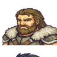
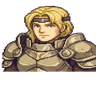

⚔️ 角色圖鑑
火炎之紋章：翠星之影 — 全 11 位可操控角色
← 返回遊戲
🗡️ 主要角色
艾琳（Eirine）
領主 → 領主騎士
序章加入 | Lv.1
亡國公主，在王宮陷落之夜由老騎士馬庫斯帶領逃出。性格堅毅但富有同情心，背負復國重任。 擅使細劍（Rapier），對騎兵和重甲有特效傷害。初期較脆弱但成長潛力優秀，是隊伍的精神支柱。
速度↑
技巧↑
運氣↑
防禦↓
魔防↓
馬庫斯（Marcus）
聖騎士（已轉職）
序章加入 | Lv.1（已轉職）
王宮親衛隊長，艾琳父王的忠臣。典型的「謝根」型角色——初期戰力強大，能輕鬆清場， 但成長率極低，後期會被其他角色超越。建議用來擋刀和救急，盡量把經驗讓給艾琳和其他成長型角色。
力量↑
防禦↑
技巧↑
成長率全面低↓
🏹 前期加入
莉娜（Lina）
弓手 → 狙擊手
第一章加入 | Lv.1
荒野中遇到的獵人，性格直率帶刺，嘴巴不饒人但心地善良。弓箭手只能遠程攻擊（射程 2）， 無法反擊近戰，需要前排保護。速度和技巧成長優秀，後期是穩定的輸出手。
技巧↑↑
速度↑↑
防禦↓
近戰無法反擊

托爾（Thor）
戰士 → 勇者
第二章加入 | Lv.3
北境村莊的守衛，豪爽粗獷，話不多但招招狠。力量和HP成長極高，是隊伍中最能扛的前排之一。 缺點是速度慢，容易被追擊，需要搭配治療。手斧可以遠程攻擊（射程 1-2）非常實用。
HP↑↑
力量↑↑
防禦↑
速度↓↓
魔防↓↓
賽拉（Serra）
僧侶 → 司祭
第二章加入 | Lv.2
溫柔神秘的修女，話語中常帶著若有所指的禪意。隊伍唯一的治療者，無法直接攻擊但不可或缺。 治療隊友可獲得經驗值，轉職後可使用攻擊魔法。魔防成長極高，是對抗法師的最佳人選。
魔力↑↑
魔防↑↑
運氣↑
力量↓↓
防禦↓↓
⚔️ 中期加入
凱恩（Cain）
傭兵 → 勇者
第三章說服加入 | Lv.5
冷面傭兵，一開始是敵方角色。需要艾琳在戰場上與他對話才能說服加入。 全面均衡的戰士，沒有明顯弱點，速度和技巧都不錯。加入時自帶回復藥，是可靠的全能型角色。
HP↑
速度↑
技巧↑
全面均衡
法蘭（Fran）
魔法師 → 賢者
第四章加入 | Lv.5
年輕自負的天才法師，嘴上傲慢但實力確實強。火焰和雷電雙修，魔法攻擊打重甲敵人非常有效。 缺點是HP和防禦極低，被物理攻擊一刀就危險。需要嚴格控制站位，放在後排輸出。
魔力↑↑↑
速度↑
HP↓↓
防禦↓↓
雷克斯（Rex）
飛龍騎士 → 飛龍領主
第五章加入 | Lv.7
正直的龍騎兵，騎著飛龍參戰。飛行單位可以無視地形障礙（山、河、森林），機動性極強。 力量和防禦都不錯，但弓箭是天敵——被弓手打會吃特效傷害。遠離弓手，用來繞後突襲最有效。
力量↑
防禦↑↑
飛行·無視地形
魔防↓↓
弓箭特效↓↓↓
🌟 後期加入
ナターシャ（Natasha）
天馬騎士 → 隼騎士
第六章增援加入 | Lv.8
開朗勇敢的天馬騎士，在港口戰役中作為增援趕到。飛行單位，速度成長極高， 魔防也不錯，是對付法師的利器。缺點是防禦偏低，不適合硬扛物理攻擊。和雷克斯一樣怕弓箭。
速度↑↑↑
魔防↑
飛行·無視地形
防禦↓
弓箭特效↓↓↓
オリヴィエ（Olivier）
盜賊 → 刺客
第七章村莊訪問加入 | Lv.8
沉默寡言的盜賊，在深淵之森中被發現。速度全隊最高，幾乎不會被追擊，也經常追擊敵人。 技巧高意味著命中率和必殺率都不錯。缺點是攻擊力偏低，更適合用來收割殘血而非正面硬剛。
速度↑↑↑↑
技巧↑↑
力量↓
防禦↓

ヘルガ（Helga）
將軍（已轉職）
第八章對話加入 | Lv.1（已轉職）
帝國要塞的前指揮官，因良心不安而倒戈。重甲單位，防禦力冠絕全隊，站在窄路上就是一座活城牆。 缺點是移動力極低（4格），速度也慢，容易被追擊。魔法是她的剋星。需要隊友幫忙推進。
HP↑↑
防禦↑↑↑
速度↓↓↓
魔防↓↓
移動力 4